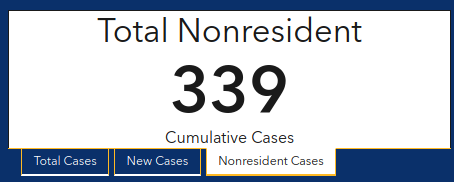

[AK] Non resident cases in Alaska
Issue number 640
space-buzzer opened this issue on July 17, 2020 at 12:01 am
Labels Historical Data stale Backfill Missing Data
Alaska reports non residents separately from cases 
Alaska has a case-line data table for the out of state table, with their “report date”. This is a time series built from this data
Comments
This issue has been automatically marked as stale because it has not had recent activity. It will be closed if no further activity occurs. Thank you for your contributions!
This issue has been automatically marked as stale because it has not had recent activity. It will be closed if no further activity occurs. Thank you for your contributions!
This issue has been automatically marked as stale because it has not had recent activity. It will be closed if no further activity occurs. Thank you for your contributions!
This issue has been closed because it was stale for 15 days, and there was no further activity on it for 10 days. You can feel free to re-open it if the issue is important, and label it as “not stale.”
In case folks are interested in viewing the data directly, here’s the source: https://coronavirus-response-alaska-dhss.hub.arcgis.com/datasets/covid-cases-out-of-state
The CSV linked below updates daily with the non-resident cases: https://opendata.arcgis.com/datasets/f34c6b1e58f34939bb6d2d721eb7a1e7_0.csv